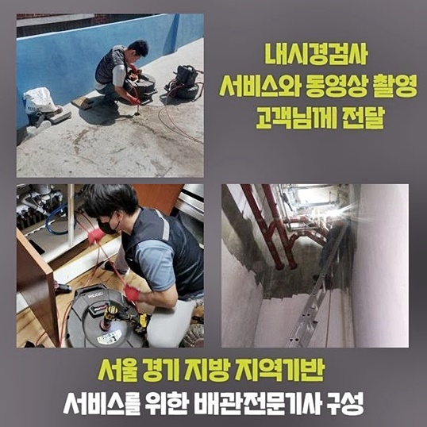
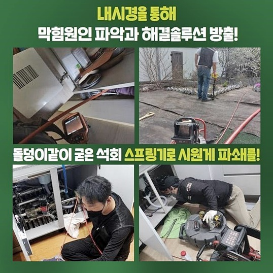
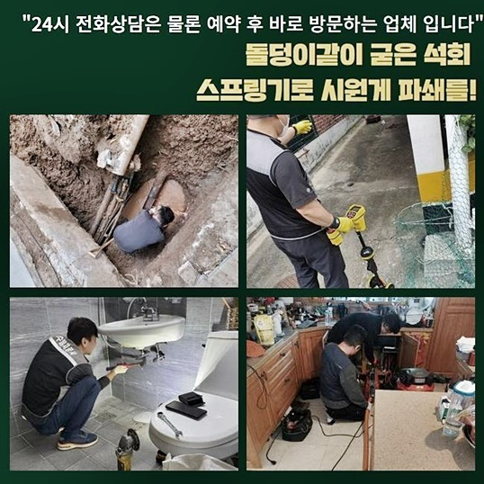
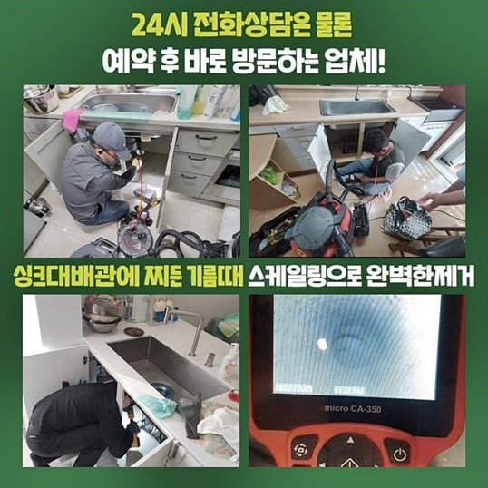
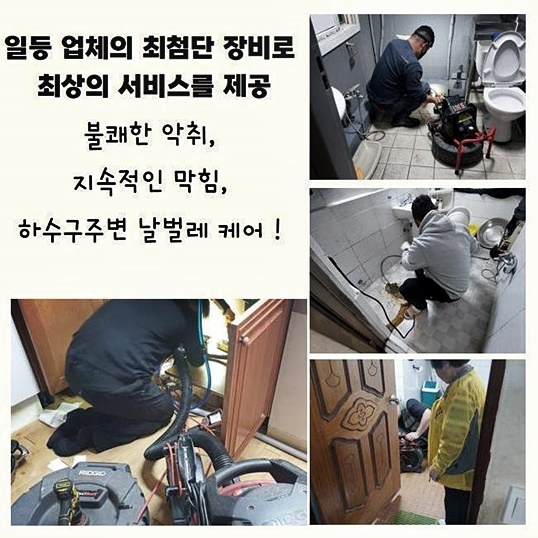
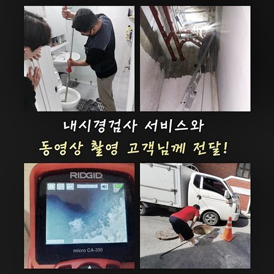

🏠 광주 태전동씽크대배수관막힘 초월읍 하수구청소장비 배관뚫는업체
용인시 처인구 배관막힘 전문 시공 후기

📋 작업 개요
- 위치: 용인시 처인구, 수원시 영통구, 화성시 동탄
- 서비스 유형: 배관막힘, 하수구청소, 누수수리, 고압세척, 내시경점검
- 작업 일시:
- 업체명: 하수구수사대 (010-5615-2118)
🔍 문제 상황
광주 태전동씽크대배수관막힘 초월읍 하수구청소장비 배관뚫는업체
수많은 손님들이 오가는 한 상점가에서 하수도가 꽉 막혔다는 고객님의 호소를 듣고 조속하게 막힘이 빚어진 곳에 이동해서 보수를 해드렸어요
갖가지 업종들이 영업을 이어가는 다중 상업지는 특히나 주기적으로 하수관이 막혀버릴 가능성이 농후합니다
이러한 막힘을 인지하자마자 빠른 문제점의 개선이 실시되지 않는 현장이라면 급속도로 피해 수준이 늘어날 수 있는 만큼 긴급건으로 취급하여 작업지로 지체 없이 달려가고 있습니다
상가 건물은 다채로운 업종의 가게들이 여러 호실 모여있는 만큼 기하급수적으로 갖가지 오염 물질들이 중앙 배관 속으로 점차 층을 이루듯 쌓여가요
고객님께서는 한 식당 매장을 이끌고 계셨는데 어느 날 예고없이 나타난 하수 배출의 곤란에다 오염된 하수까지 범람하여 매장 자체를 열지 못하시던 아주 곤란한 상황이었는데요
간략한 질문을 드려보니 지난주부터 과거와는 다른 증상들이 거슬리긴 했지만 일시적인 사안일 거라고 흐린 눈으로 보면서 지나갔다고 하셨어요
하수구의 장애는 보통 수돗물과 직결적인 관련성이 있으므로 조금이나마 고충을 경감시키기 위해서는 비정상적인 측면이 관찰될 시 망설이지 말고 행동에 옮겨야 합니다
작업할 건물에 도착 후 문제가 생긴 지점으로 가서 외관으로 보이는 문제점을 하나하나 찾아내었는데 초반에 경청했던 내용들과 진배없이 막힘에다 역류까지도 중첩된 상황이었습니다

🔎 원인 분석
💡 전문가 진단: 정밀 진단 장비를 사용하여 슬러지의 고착 여부를 판명하고 타격/세척 작업을 실시했습니다.
또한 막힌 하수구때문에 퀘퀘한 냄새가 스믈스믈 올라오는 걸 쉽게 인지할 수 있었는데요
지독한 냄새가 퍼지면 위생 상태가 불량해 보이는 사유 중 하나라서 속히 뚫어서 악취를 소거하는 게 좋습니다
여러 증세가 결합된 사태를 전적으로 잡기 위해서는 오류 인자를 찾아내서 그에 맞는 대응채긍로 작업해 주는 것이 좋은 것입니다
얼마나 문제가 진척되었나 짐작하기 위해서는 전용 도구인 촬영도구를 꺼내들어야 합니다
초소형의 바디를 보유하고 있는 장비라서 장비없인 보기 힘든 파이프라인을 샅샅이 중계를 해주는 역할을 하게 됩니다
카메라의 스크린을 살피며 메인 배관을 주의 깊게 조사하면 이번 막힘 사건이 도래한 대상지와 동시에 오염물의 성분까지 디테일하게 밝혀낼 수 있습니다!
저희도 특화된 카메라를 통해 통합적인 평가를 시행해 보았더니 천장 부분에 놓여있는 배관에서 뭔가 이상하다는 증거들이 벌어진 사실을 받아들이게 됐어요!
배관의 심층부까지 관측해 봤더니 질퍽거리는 부패한 기름기 성분이 응집된 뭉치처럼 딱딱하게 변했고 한 부분에 부착된 문제 덩어리는 오래돼서 부식이 진행되어 버린 아주 곤란한 상황이었는데요
막히는 증상이 생긴 작업 현장을 둘러보면 보편적으로 기름이 배어 있는 찌꺼기들이 내면에 가장 흔하게 발견되는데요
오일층은 하수와 절대 안 섞이는 차이가 있기 때문에 배관로에 점진적으로 누적되어 버린다면 뭉쳐있는 모양으로 고체화가 되는데다가 규모는 더 확대해 나가며 통로를 아예 막아버립니다

🔧 작업 과정
관찰해본 관로의 컨디션이 그리 좋지는 않았기에 다기능의 기계를 차례로 써서 청소를 해주는 게 방책이겠다 싶었어요
모터의 힘으로 도는 샤프트를 가동하여 관찰된 체증을 해소해 주고 관로에 틈새를 만들어 고압수 발사로 하는 청소를 잇따라 걸어주기로 했네요
플렉스샤프트는 각종 오염요소를 유연하게 풀어주는 변화를 만들어주는 장비이며 쇠사슬같은 말단 파트가 파이프가 데미지를 입는 것을 감소시키며 세밀하게 정리할 수 있는 강점을 지니고 있어요
국소 구간에만 누적된 오물때문에 막힘과 역류가 일어나게 됐다면 단순히 샤프트만 가동하는 활동으로도 하수의 배출 장애를 해소하실 수 있습니다
채워졌던 관로 속이 나아졌다 싶다면 다음은 배관이 매설되어 있는 현장으로 방향을 바꿔 고압청소의 단계에 진입하게 됩니다
층고가 높은 곳에서 작업을 이어가야 했으므로 비계를 깔아두고 작업 준비를 해줬어요
단번에 뚫는 작업이라 갖가지 오염 물질들이 폭탄처럼 터져버릴 가능성이 농후하다 보여서 방수가 되는 비닐로 완전히 덮어둔 환경에서 일을 시작하고 있으니 걱정마세요
해당 과정에서 쓰는 장비는 응축된 물을 발사하여 내부 환경을 씻어내려주는 업무인데 무르지 않고 강하게 결합되어 오고 진흙처럼 꾸덕한 찌꺼기도 완벽하게 소거할 수 있습니다
그러나 주의해야할 점은 세밀하게 강도를 설정할 줄 알아야 하며 특성을 잘 이해하는 숙련자가 쓰는 게 좋습니다
무조건 강하게만 나가는 게 아니라 약해진 배관 라인에 파손이 입혀지지 않게끔 깊이에 따라서 강도를 다르게 설정해서 세정하는 것이 중요합니다
기계에서 나오는 고압수의 힘의 수준은 예상하셨던 수준보다 특출난 편이라서 계획적이지 않은 접근으로 업무에 임한다면 배관벽이 다치는 것을 일으켜 누수되는 현상같은 오히려 일을 그르칠 수가 있기 때문입니다
지난 사례들을 자원으로 하여 매뉴얼을 깊이 있게 알고 2차적인 피해가 없게 시공을 마무리하려고 원칙에 맞게 작업해요
잔여물이 없는 결과물이 탄생할 수 있도록 고압수를 쏘는 작업에 들어가기 전에 배수관이 충분히 버틸 수 있는지 체크하는 사전 과정을 거쳐 안전한 정도를 정합니다
말끔히 물로 쓸어내 주고 내시경을 도로 넣어보면 물길이 시원하게 회복된 배관의 맑은 상태를 얻을 수 있게 됩니다
수많은 판매업소가 내점되어 있는 상가형태의 빌딩이면 평균 여유있을 때마다 자주 전문적 세척 서비스를 받아본다면 하수구 이슈에 대한 고통과 일상의 방해를 해결을 볼 수 있게 됩니다
물이 아예 막히는 하수구 비정상적인 신호가 보이면 무엇보다도 적절하게 뚫는 작업이 가장 효과적인 요소입니다


✅ 작업 완료
만약에 적기에 하수의 흐름이 확보된다면 더욱 합리적인 비용으로도 고쳐나갈 수 있는 것을 알아두시면 도움이 될겁니다
청소를 게을리하게 된다면 훨씬 심각한 사안까지도 터져버릴 수 있으니 이상함을 감지하면 곧 바로 와달라고 불러주셔야만 비교적 수월하게 시설물을 회복시켜드릴 수 있습니다
여러 종류의 보수 경험을 함양한 전문인력이 계신 곳으로 바로 이동해서 하수구 불통을 뚫어주는 뛰어난 해결책을 맞춤 적용해 드리고 있습니다
당장 손봐야할 곳이 있으시다면 시간에 연연하지 마시고 든든하게 처리해주는 업체인 저희에게 연락해 주시면 감사드리겠습니다



⚠️ 하수구 배관 막힘 예방 및 관리 가이드
- ✅ 머리카락, 비닐, 물티슈 등 물에 분해되지 않는 이물질은 절대 흘려보내지 마세요.
- ✅ 기름기 많은 식기는 설거지 전 키친타올로 먼저 기름때를 닦아내세요.
- ✅ 주기적으로 배수구에 뜨거운 물을 가득 부어주어 유지방 고착을 방지하세요.
- ✅ 작업 후 1년 이내 재발 시 무상 A/S 보증 서비스를 제공합니다.
💡 핵심 정리
- 확실한 장비 작업(내시경 점검 및 샤프트 스케일링)으로 원인을 뿌리 뽑습니다.
- 작업 후 1년 이내에 동일한 부위 재발 시 100% 무상 A/S 서비스를 보장합니다.
- 서울 · 경기 · 인천 전 지역에 24시간 언제든 긴급 출동할 수 있도록 항시 대기 중입니다.
❓ 자주 묻는 질문 (FAQ)
🚨 용인시 처인구 배관막힘 문제로 고민이신가요?
정확한 원인 진단과 확실한 시공으로 재발 없는 해결을 약속드립니다.
24시간 긴급 출동 | 서울 · 경기 · 인천 전지역 | 1년 내 재발 시 무상 A/S